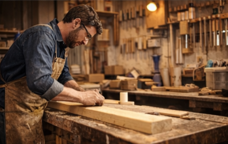

Nuestra Historia
Carpintería El Roble nació como un emprendimiento familiar con el propósito de transformar la madera en piezas únicas que combinan funcionalidad, diseño y durabilidad. Contamos con más de 15 años de experiencia en el sector de la carpintería, desarrollando proyectos residenciales y comerciales.
Nuestro equipo está conformado por maestros carpinteros altamente capacitados,
comprometidos con la calidad en cada detalle. Utilizamos materiales seleccionados,
herramientas modernas y técnicas tradicionales que garantizan acabados
resistentes y estéticamente atractivos.
Nos especializamos en cocinas integrales, muebles personalizados,
closets, puertas, mesas de comedor y soluciones a medida según las
necesidades del cliente.

Misión
Diseñar y fabricar productos en madera de excelente calidad, brindando soluciones funcionales y personalizadas que superen las expectativas de nuestros clientes.
Visión
Ser una carpintería reconocida a nivel regional por la innovación, el compromiso y la excelencia en cada uno de nuestros proyectos.